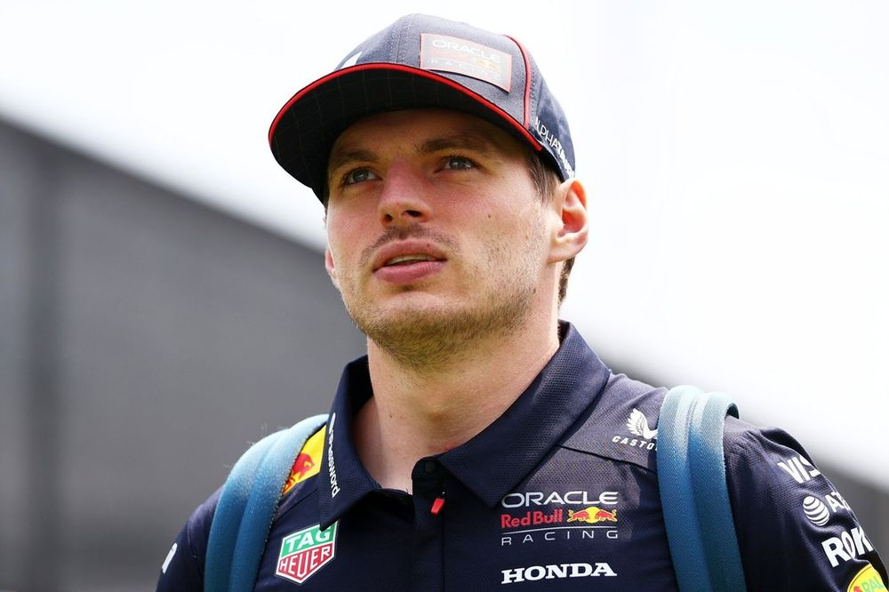
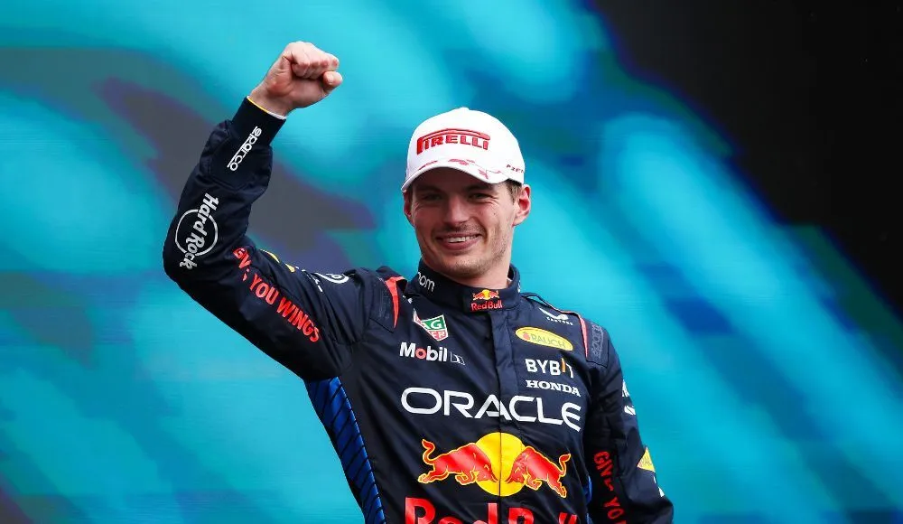
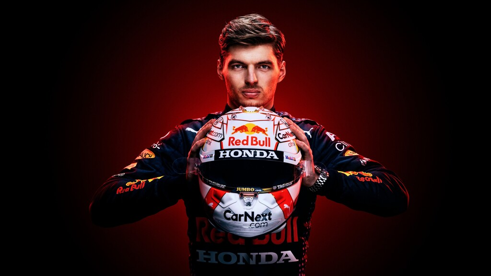

PortaFolio
Max Verstappen
soy
Max Verstappen nació para ir rápido. Hijo del excorredor de Fórmula Uno Jos Verstappen, su madre Sophie también compitió en karts con éxito. Nació en Hasselt (Bélgica) en 1997, y muy pronto empezó a competir, corriendo regularmente en karts en Genk (Bélgica) en 2003.


Max Verstappen
Piloto De F1 & Modelo
Conoceme
Apasionado por La Velocidad
es algo que me define perfectamente. Desde que era un niño, la velocidad me ha cautivado, me ha desafiado y me ha impulsado a ser quien soy hoy: un piloto de Fórmula 1 en constante búsqueda de perfección.
Para mí, no es solo una cuestión de aceleración o de números en un cronómetro, es una sensación visceral. Es sentir cómo el coche responde a cada movimiento, cómo cada curva se convierte en una danza entre la máquina y yo, buscando la fracción de segundo que me separa de la gloria.
117
Podios Completados
65
Victorias
4
Veces Campeon Del Mundo
Especialización
Piloto de Fórmula 1
Nivel de Experiencia
Profesional Senior
Educación
Academia de Pilotos Red Bull
Idiomas
Neerlandés, Inglés, Español
Millones de seguidores
Equipos
Victorias
Años
Tralectoria
Resumen
Max Verstappen es un piloto profesional de Fórmula 1, reconocido por sus excepcionales habilidades de conducción, su enfoque táctico y su determinación para superar los límites del rendimiento. Ha ganado múltiples carreras de Fórmula 1 y ha asegurado campeonatos mundiales, incluido el Campeonato Mundial de 2021, consolidando su posición como uno de los mejores pilotos en la historia moderna de la F1.

Professional Summary
Max Verstappen is a professional Formula 1 driver, recognized for his exceptional driving skills, tactical approach, and determination to push the limits of performance. He has won multiple Formula 1 Grand Prix races and secured world championships, including the 2021 World Championship, solidifying his position as one of the greatest drivers in modern F1 history.
Contact Information
- Montecarlo, Mónaco (Resides in the Principality, but also has a base in the Netherlands)
- maxverstappen@example.com
- +31 6 12345678 (example)
- linkedin.com/in/maxverstappen
Technical Skills
Pilotaje de Fórmula 1
100%
Gestión de Equipo
90%
Adaptabilidad a Condiciones de Carrera
95%
Desarrollo de Estrategias de Carrera
85%
Experiencia Profesional
Piloto Principal, Red Bull Racing
2016 - Presente
Red Bull Racing
- Líder de equipo y piloto principal para el equipo Red Bull Racing.
- Ha ganado múltiples campeonatos mundiales de Fórmula 1, incluido el campeonato de 2021.
- Ha logrado más de 40 victorias en la Fórmula 1, consolidándose como uno de los pilotos más exitosos de la historia.
- Desarrollo y ajuste de la estrategia de carrera junto con el equipo de ingenieros y estrategas para optimizar el rendimiento del coche.
Piloto, Scuderia Toro Rosso (Ahora AlphaTauri)
2015 – 2016
Toro Rosso
- Debutó en la Fórmula 1 a los 17 años, convirtiéndose en el piloto más joven en debutar en la F1.
- Ganó su primera carrera en 2016 en el Gran Premio de España, convirtiéndose en el ganador más joven en la historia de la Fórmula 1.
Educación
Licenciatura en Pilotaje Profesional
Academia de Pilotos Red Bull
Red Bull Racing
Formación en técnicas de conducción avanzadas, simuladores y preparación física para competiciones de alto rendimiento.
Certificaciones
Piloto Profesional de Fórmula 1
Federación Internacional del Automóvil (FIA) – 2015
Portfolio
Magnam dolores commodi suscipit. Necessitatibus eius consequatur ex aliquid fuga eum quidem. Sit sint consectetur velit. Quisquam quos quisquam cupiditate. Et nemo qui impedit suscipit alias ea. Quia fugiat sit in iste officiis commodi quidem hic quas.
{kind=link}
{kind=link}
{kind=link}
{kind=link}
{kind=link}
{kind=link}
Servicios
Soluciones innovadoras de rendimiento en carreras
Innovative racing
performance solutions
Integramos estrategias de vanguardia, enfoques creativos y tecnologías de última generación para ofrecer experiencias excepcionales en la pista, impulsar el crecimiento en el automovilismo y atraer a una audiencia global.
Ver Todos los LogrosExcelencia en carreras
Max Verstappen ha demostrado ser uno de los pilotos más completos de la Fórmula 1. Su habilidad para maximizar el rendimiento del coche en cualquier situación y su capacidad para mantener la calma bajo presión lo han convertido en un referente mundial. Cada victoria en su carrera ha sido una muestra de su increíble destreza y determinación.
Mentalidad ganadora
La mentalidad de Max es una de sus mayores fortalezas. Siempre enfocado en la mejora continua, su incansable deseo de ganar lo ha llevado a conquistar múltiples campeonatos mundiales. Su enfoque implacable y su capacidad para mantenerse calmado en situaciones de alta presión le permiten superar a sus competidores una y otra vez.
Colaboración en equipo
Max ha cultivado una relación de confianza con su equipo de ingenieros y estrategas, lo que ha sido esencial para perfeccionar la configuración del coche y las estrategias de carrera, obteniendo así el éxito constante.
Innovación en la conducción
Las habilidades de Max no solo se limitan a su velocidad en la pista, sino que también es un pionero en la forma de abordar el pilotaje. Sus técnicas innovadoras han influido en la configuración de los coches de Fórmula 1 y en la manera en que los equipos de ingeniería y los pilotos gestionan la información durante las carreras. Max es un verdadero innovador dentro del mundo de la F1, empujando los límites con cada maniobra.
Reconocimiento global
Max Verstappen no solo ha ganado campeonatos, sino que también ha logrado un reconocimiento global. Desde su primer Gran Premio, ha capturado la atención de millones de fans alrededor del mundo, llevando la Fórmula 1 a nuevas alturas en términos de visibilidad. Su crecimiento como figura mediática ha sido increíble, inspirando a nuevas generaciones de pilotos y aficionados a seguir el deporte.
Presencia en medios
La presencia de Max en los medios, entrevistas y redes sociales le ha permitido conectar con una audiencia global. Su carisma y dedicación al deporte lo han convertido en una figura destacada tanto para los medios como para los aficionados.
Testimonios
La implementación de estrategias innovadoras ha transformado nuestro enfoque a los desafíos del mercado y el posicionamiento competitivo.
Implementar estrategias innovadoras ha revolucionado nuestra aproximación a los desafíos del mercado y el posicionamiento competitivo.

Ana García
Directora de EstrategiaLa entrega excepcional de servicios y las soluciones innovadoras han transformado nuestras operaciones comerciales, llevando a un crecimiento notable y una mayor satisfacción del cliente en todos los puntos de contacto.

Carlos Martínez
Director de InnovaciónLa asociación estratégica ha permitido una transformación digital fluida y una excelencia operativa.

María López
Líder DigitalLa experiencia profesional y la dedicación han mejorado significativamente nuestros tiempos de entrega de proyectos y las métricas de calidad.

José Pérez
Director TécnicoEl enfoque colaborativo y la experiencia en la industria han revolucionado nuestro ciclo de desarrollo de productos, resultando en un tiempo de salida al mercado más rápido y un aumento en los niveles de compromiso del cliente.

Laura Rodríguez
Gerente de ProductoEl enfoque innovador en el diseño de la experiencia de usuario ha mejorado significativamente las métricas de compromiso de nuestra plataforma y las tasas de retención de clientes.

David Fernández
Director de UXContact
Necessitatibus eius consequatur ex aliquid fuga eum quidem sint consectetur velit
Información De Contacto
Si tienes alguna pregunta, no dudes en ponerte en contacto con nosotros a través de los siguientes medios:
Nuestra Ubicación
Santa Marta, SM 400005
Número de Teléfono
+1 5589 55488 55
+1 6678 254445 41
max@example.com
verstappen@example.com
Contáctanos
Por favor, completa el siguiente formulario para ponerte en contacto con nosotros.